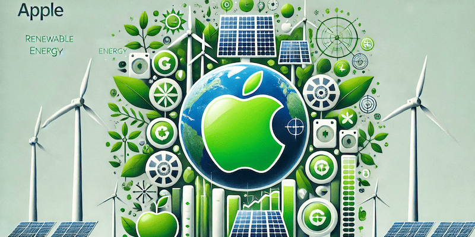

Apple lanza el nuevo iPhone 16 con innovadoras características
Apple ha presentado oficialmente el iPhone 16, su último smartphone insignia que redefine la experiencia móvil. El nuevo dispositivo cuenta con una pantalla OLED Super Retina XDR de 6.1 pulgadas, cámaras mejoradas con capacidades fotográficas avanzadas y el nuevo chip A18 Bionic que promete un rendimiento superior y eficiencia energética. Además, introduce funcionalidades de seguridad como detección de accidentes y llamadas de emergencia vía satélite. Con un diseño elegante y opciones de colores renovadas, el iPhone 14 ofrece a los usuarios una combinación de potencia, innovación y estilo que establece nuevos estándares en la industria.
macOS Sequoia: La nueva actualización que potencia tu Mac
Apple ha lanzado macOS Sequoia, la última versión de su sistema operativo para Mac, que trae una serie de mejoras y nuevas funcionalidades diseñadas para optimizar la productividad y la creatividad. Entre las novedades destacan Stage Manager, una nueva forma de organizar ventanas y aplicaciones; Continuity Camera, que permite usar el iPhone como webcam de alta calidad; y actualizaciones en Mail, Safari y Mensajes. Con un enfoque en la integración y la eficiencia, macOS Ventura promete ofrecer una experiencia de usuario más fluida y conectada entre dispositivos Apple.
Apple invierte en energías renovables para alcanzar carbono neutral
En su compromiso continuo con el medio ambiente, Apple ha anunciado una inversión significativa en proyectos de energías renovables en todo el mundo. La empresa se ha fijado el objetivo de ser completamente neutral en carbono para 2030, no solo en sus operaciones corporativas sino también en toda su cadena de suministro y ciclo de vida de productos. Los proyectos incluyen parques solares y eólicos, así como iniciativas para mejorar la eficiencia energética de sus instalaciones y productos. Con estas acciones, Apple busca liderar el sector tecnológico hacia prácticas más sostenibles y responsables con el planeta.